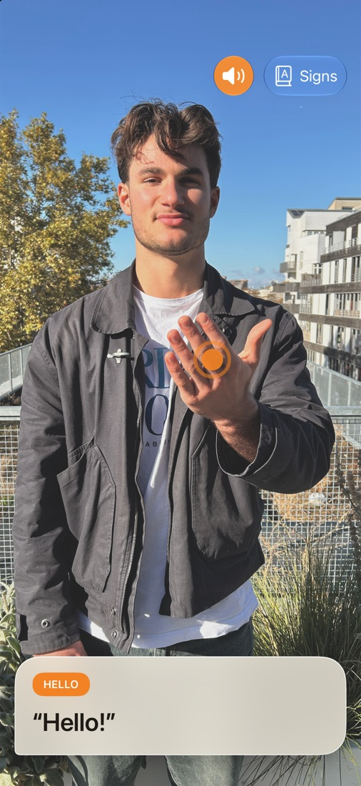
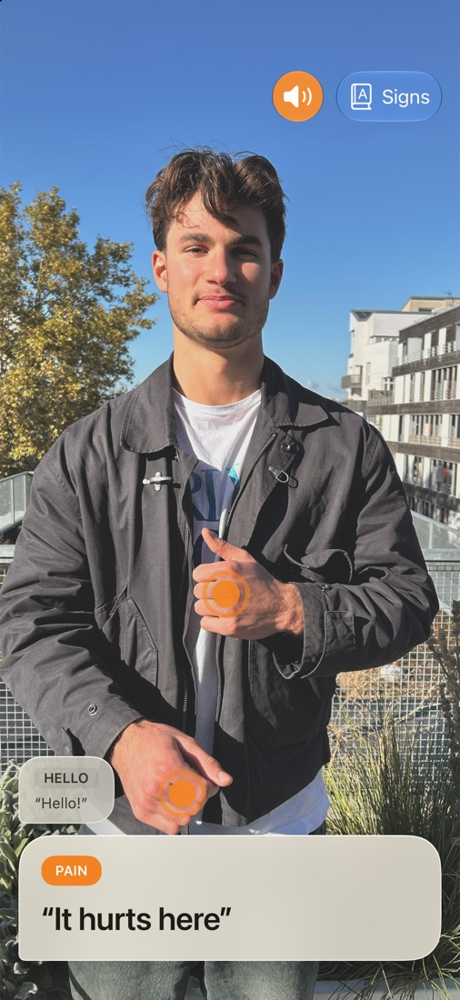

Be understood, even offline.
In an emergency, every second counts. SignBridge helps a person who signs to be understood.



Point the camera
Open the app and point the camera at the person signing.
They sign
Hands and upper body in the frame. A framing guide helps them get in place.
The sentence appears
It shows on screen and can be read aloud.
Everything stays on your device.
All images stay on your iPhone or iPad. SignBridge works with no network, even at the back of a shop or high in the mountains. No account, no ads, free.
A tool, not an interpreter.
The signs were chosen for situations where people need to understand each other fast. SignBridge does not understand LSF in general, it can get signs wrong, and it does not replace an interpreter. New signs arrive with each version.
A question, or a sign you'd like to see?
Write to us, we read every message. For a problem, please include your iPhone or iPad model and system version.
Write to SignBridge